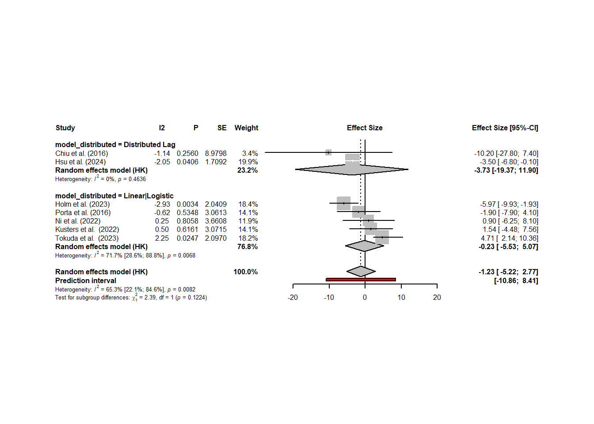

review_data <- read_xlsx (
path = "C:\\Users\\aho135\\OneDrive - University of Canterbury\\Research\\air quality and IQ metaanalysis data.xlsx",
range = "data!B1:U139")Meta-analysis: Pollution and IQ
This page is designed to provide detail on the meta-analysis undertaken for the review “Air pollution (PM2.5 and NO2) exposure and child IQ: a systematic review and meta-analysis of prospective and longitudinal evidence”
Meta-analysis Model Assumptions
Fixed-effects model
Assumes that all effect sizes stem from a single, homogeneous population, i.e. all studies share the same true effect size. Thus any deviation from the overall effect size by any given study is because of sampling error. Hence why the effect is fixed. Can also be referred to as “equal effects” or “common effect”.
Studies with a small standard error, numerical representation of sampling error, should be better estimators of the true overall effect than studies with large standard errors. Pooled effects in meta-analyses give effect sizes with smaller standard errors (e.g. higher precision) a greater weight, inverse-variance weighting.
Random-effects model
It might be unrealistic to assume studies in a meta-analysis are always completely homogeneous, e.g. the study of interest might be measured in different ways, or the length of exposure varies, or the target populations are not identical. In such cases there may be considerable between-study heterogeneity in the true effects. The random-effects model assumes effects of individual studies differ not only in sampling error alone but in other sources of variance.
The random-effects model assumes there is not only one true effect size but a distribution of true effect sizes, therefore the model estimates the mean of the distribution of true effects. This model does, however, give more attention to small studies when calculating the pooled effect than the fixed-effects model.
Estimators of the Between-Study Heterogeneity
The I2 statistic (J. P. Higgins and Thompson 2002) quantifies between-study heterogeneity, and is directly based on Cochran’s Q. It is defined as the percentage of variability in the effect sizes that is not caused by sampling error. An I2 value of approximately 50% indicates that about half of the variation is due to between-study heterogeneity.
The “rule of thumb” for interpreting this statistic is (J. P. Higgins and Thompson 2002): I2 = 25%: low heterogeneity I2 = 50%: moderate heterogeneity I2 = 75%: substantial heterogeneity.
The H2 statistic (J. P. Higgins and Thompson 2002) is also derived from Cochran’s Q, and similar to I2. When there is no between-study heterogeneity, H2 equals one (or smaller). Values greater than one indicate the presence of between-study heterogeneity. Compared to I2, it is far less common to find this statistic reported in published meta-analyses.
Due to the aprior assumption the studies included in this review lack study homogeneity a random-effects model is preferred however, if heterogeneity is found to be less than 50%, models will be run with fixed-effects.
Definition of R model terms
- TE = specifies the effect size variable
- lower = specifies variable that contains the lower limit of confidence interval
- upper = specifies variable that contains the upper limit of confidence interval
- studlab = study/article label
- sm = summary measure
- common = indicates a fixed-effects model should be run
- random = indicates a random-effects model should be run
- method.tau = defines the r2 estimator
- “DL”, DerSimonian-Laird estimator (DerSimonian and Laird, 1986)
- method.random.ci = controls how confidence internals are calculated for the random-effects model
- “HK”, Method by Hartung and Knapp (2001a/b) based on a refined variance estimator for the treatment estimate and a quantile of a t-distribution with k-1 degrees of freedom where k corresponds to the number of studies in the meta-analysis. This method has shown improved coverage probabilities compared to the classic random effects method (default).
- ad.hoc.ci = ad hoc correction for the Hartung-Knapp (HK) method because in rare settings with very homogeneous treatment estimates, the Hartung-Knapp variance estimate can be arbitrarily small resulting in a very narrow confidence interval (Knapp and Hartung, 2003; Wiksten et al., 2016). An ad hoc variance correction has been proposed by utilising the variance estimate from the classic random effects model with the Hartung-Knapp method.as
- “se”, use variance correction if HK standard error is smaller than standard error from classic random effects meta-analysis (Knapp and Hartung, 2003).
- method.tau.ci = calculates a confidence interval for τ2 and τ
- “J”, Jackson method recommended for DerSimonian-Laird estimator of τ2
- method.I2 = method to estimate the I-squared statistic
- “Q”, based on heterogeneity statistic Q
- data = data table to undertake analysis with
Data Wrangling
Chiu et al - sex differences reported with SE and converted to confidence intervals with formula \(\mathrm{CI_h=\bar{x}+SE⋅1.95996}\)
Ni et al - ppb for NO2 converted to ug/m3 using an online converter (https://www.wkcgroup.com/tools-room/micrograms-per-cubic-meter-parts-per-billion-converter/)
Standardised Data
knitr::kable(standardised_review_data)| reference | study | sample | exposure | exposure_time | exposure_period | iq_test | iq_wechsler | iq_mccarthy | age_tested | age_period_tested | model type | model_distributed | model n | orig_effect_size | orig_ci_lower | orig_ci_upper | exposure_level | exposure_type | exposure_standard_ugm3 | standardised_effect_size | standardised_ci_lower | standardised_ci_upper |
|---|---|---|---|---|---|---|---|---|---|---|---|---|---|---|---|---|---|---|---|---|---|---|
| 1 | Chiu et al. (2016) | Total | PM2.5 | Averaged across sensitive window | pre-natal | WISC-IV | yes | no | 6.5 years | early | Distributed lag model | yes | 267 | -0.65 | -1.410000 | 0.1000000 | Change in full-scale IQ per unit increase | micrograms per cubic meter | 1.00 | -6.50 | -14.10 | 1.00 |
| 1 | Chiu et al. (2016) | Total | PM2.5 | Averaged over entire pregnancy | pre-natal | WISC-IV | yes | no | 6.5 years | early | Distributed lag model | yes | 267 | -1.02 | -2.780000 | 0.7400000 | Change in full-scale IQ per unit increase | micrograms per cubic meter | 1.00 | -10.20 | -27.80 | 7.40 |
| 1 | Chiu et al. (2016) | Boys | PM2.5 | Averaged across sensitive window | pre-natal | WISC-IV | yes | no | 6.5 years | early | Distributed lag model | yes | 148 | -1.00 | -1.970000 | -0.0100000 | Change in full-scale IQ per unit increase | micrograms per cubic meter | 1.00 | -10.00 | -19.70 | -0.10 |
| 1 | Chiu et al. (2016) | Boys | PM2.5 | Averaged over entire pregnancy | pre-natal | WISC-IV | yes | no | 6.5 years | early | Distributed lag model | yes | 148 | -0.90 | -2.700000 | 0.9000000 | Change in full-scale IQ per unit increase | micrograms per cubic meter | 1.00 | -9.00 | -27.00 | 9.00 |
| 1 | Chiu et al. (2016) | Girls | PM2.5 | Averaged across sensitive window | pre-natal | WISC-IV | yes | no | 6.5 years | early | Distributed lag model | yes | 119 | 0.14 | -0.870000 | 1.2900000 | Change in full-scale IQ per unit increase | micrograms per cubic meter | 1.00 | 1.40 | -8.70 | 12.90 |
| 1 | Chiu et al. (2016) | Girls | PM2.5 | Averaged over entire pregnancy | pre-natal | WISC-IV | yes | no | 6.5 years | early | Distributed lag model | yes | 119 | 0.08 | -2.100000 | 2.1800000 | Change in full-scale IQ per unit increase | micrograms per cubic meter | 1.00 | 0.80 | -21.00 | 21.80 |
| 1 | Chiu et al. (2016) | Boys | PM2.5 | 1st trimester | pre-natal | WISC-IV | yes | no | 6.5 years | early | Linear regression model | no | 148 | -0.24 | -1.592375 | 1.1123752 | Change in full-scale IQ per unit increase | micrograms per cubic meter | 10.00 | -0.24 | -1.59 | 1.11 |
| 1 | Chiu et al. (2016) | Boys | PM2.5 | 2nd trimester | pre-natal | WISC-IV | yes | no | 6.5 years | early | Linear regression model | no | 148 | -0.05 | -1.539573 | 1.4395726 | Change in full-scale IQ per unit increase | micrograms per cubic meter | 10.00 | -0.05 | -1.54 | 1.44 |
| 1 | Chiu et al. (2016) | Boys | PM2.5 | 3rd trimester | pre-natal | WISC-IV | yes | no | 6.5 years | early | Linear regression model | no | 148 | -1.45 | -2.919973 | 0.0199730 | Change in full-scale IQ per unit increase | micrograms per cubic meter | 10.00 | -1.45 | -2.92 | 0.02 |
| 1 | Chiu et al. (2016) | Girls | PM2.5 | 1st trimester | pre-natal | WISC-IV | yes | no | 6.5 years | early | Linear regression model | no | 119 | 0.55 | -1.057171 | 2.1571705 | Change in full-scale IQ per unit increase | micrograms per cubic meter | 10.00 | 0.55 | -1.06 | 2.16 |
| 1 | Chiu et al. (2016) | Girls | PM2.5 | 2nd trimester | pre-natal | WISC-IV | yes | no | 6.5 years | early | Linear regression model | no | 119 | -1.11 | -2.717170 | 0.4971705 | Change in full-scale IQ per unit increase | micrograms per cubic meter | 10.00 | -1.11 | -2.72 | 0.50 |
| 1 | Chiu et al. (2016) | Girls | PM2.5 | 3rd trimester | pre-natal | WISC-IV | yes | no | 6.5 years | early | Linear regression model | no | 119 | 0.41 | -1.275569 | 2.0955690 | Change in full-scale IQ per unit increase | micrograms per cubic meter | 10.00 | 0.41 | -1.28 | 2.10 |
| 3 | Guilbert et al. (2023) | Total | PM2.5 | 4 weeks | pre-natal | WPPSI-III & WISC-IV | yes | no | 5.7 years | early | Distributed lag nonlinear model | yes | 1271 | 0.03 | 0.000000 | 0.0600000 | per 10 μg/m3 increase | micrograms per cubic meter | 10.00 | 0.03 | 0.00 | 0.06 |
| 3 | Guilbert et al. (2023) | Total | PM2.5 | 8 weeks | pre-natal | WPPSI-III & WISC-IV | yes | no | 5.7 years | early | Distributed lag nonlinear model | yes | 1271 | 0.01 | -0.010000 | 0.0400000 | per 10 μg/m3 increase | micrograms per cubic meter | 10.00 | 0.01 | -0.01 | 0.04 |
| 3 | Guilbert et al. (2023) | Total | PM2.5 | 12 weeks | pre-natal | WPPSI-III & WISC-IV | yes | no | 5.7 years | early | Distributed lag nonlinear model | yes | 1271 | 0.00 | -0.030000 | 0.0300000 | per 10 μg/m3 increase | micrograms per cubic meter | 10.00 | 0.00 | -0.03 | 0.03 |
| 3 | Guilbert et al. (2023) | Total | PM2.5 | 16 weeks | pre-natal | WPPSI-III & WISC-IV | yes | no | 5.7 years | early | Distributed lag nonlinear model | yes | 1271 | -0.01 | -0.030000 | 0.0100000 | per 10 μg/m3 increase | micrograms per cubic meter | 10.00 | -0.01 | -0.03 | 0.01 |
| 3 | Guilbert et al. (2023) | Total | PM2.5 | 20 weeks | pre-natal | WPPSI-III & WISC-IV | yes | no | 5.7 years | early | Distributed lag nonlinear model | yes | 1271 | -0.01 | -0.030000 | 0.0100000 | per 10 μg/m3 increase | micrograms per cubic meter | 10.00 | -0.01 | -0.03 | 0.01 |
| 3 | Guilbert et al. (2023) | Total | PM2.5 | 24 weeks | pre-natal | WPPSI-III & WISC-IV | yes | no | 5.7 years | early | Distributed lag nonlinear model | yes | 1271 | -0.01 | -0.040000 | 0.0200000 | per 10 μg/m3 increase | micrograms per cubic meter | 10.00 | -0.01 | -0.04 | 0.02 |
| 3 | Guilbert et al. (2023) | Total | PM2.5 | 28 weeks | pre-natal | WPPSI-III & WISC-IV | yes | no | 5.7 years | early | Distributed lag nonlinear model | yes | 1271 | -0.01 | -0.030000 | 0.0100000 | per 10 μg/m3 increase | micrograms per cubic meter | 10.00 | -0.01 | -0.03 | 0.01 |
| 3 | Guilbert et al. (2023) | Total | PM2.5 | 32 weeks | pre-natal | WPPSI-III & WISC-IV | yes | no | 5.7 years | early | Distributed lag nonlinear model | yes | 1271 | -0.02 | -0.050000 | 0.0100000 | per 10 μg/m3 increase | micrograms per cubic meter | 10.00 | -0.02 | -0.05 | 0.01 |
| 3 | Guilbert et al. (2023) | Total | PM2.5 | 6 months | post-natal | WPPSI-III & WISC-IV | yes | no | 5.7 years | early | Distributed lag nonlinear model | yes | 1271 | 0.05 | 0.000000 | 0.0900000 | per 10 μg/m3 increase | micrograms per cubic meter | 10.00 | 0.05 | 0.00 | 0.09 |
| 3 | Guilbert et al. (2023) | Total | PM2.5 | 12 months | post-natal | WPPSI-III & WISC-IV | yes | no | 5.7 years | early | Distributed lag nonlinear model | yes | 1271 | 0.03 | -0.010000 | 0.0600000 | per 10 μg/m3 increase | micrograms per cubic meter | 10.00 | 0.03 | -0.01 | 0.06 |
| 3 | Guilbert et al. (2023) | Total | PM2.5 | 18 months | post-natal | WPPSI-III & WISC-IV | yes | no | 5.7 years | early | Distributed lag nonlinear model | yes | 1271 | 0.01 | -0.030000 | 0.0400000 | per 10 μg/m3 increase | micrograms per cubic meter | 10.00 | 0.01 | -0.03 | 0.04 |
| 3 | Guilbert et al. (2023) | Total | PM2.5 | 24 months | post-natal | WPPSI-III & WISC-IV | yes | no | 5.7 years | early | Distributed lag nonlinear model | yes | 1271 | -0.01 | -0.040000 | 0.0300000 | per 10 μg/m3 increase | micrograms per cubic meter | 10.00 | -0.01 | -0.04 | 0.03 |
| 3 | Guilbert et al. (2023) | Total | PM2.5 | 30 months | post-natal | WPPSI-III & WISC-IV | yes | no | 5.7 years | early | Distributed lag nonlinear model | yes | 1271 | -0.02 | -0.040000 | 0.0100000 | per 10 μg/m3 increase | micrograms per cubic meter | 10.00 | -0.02 | -0.04 | 0.01 |
| 3 | Guilbert et al. (2023) | Total | PM2.5 | 36 months | post-natal | WPPSI-III & WISC-IV | yes | no | 5.7 years | early | Distributed lag nonlinear model | yes | 1271 | -0.02 | -0.040000 | 0.0000000 | per 10 μg/m3 increase | micrograms per cubic meter | 10.00 | -0.02 | -0.04 | 0.00 |
| 3 | Guilbert et al. (2023) | Total | PM2.5 | 42 months | post-natal | WPPSI-III & WISC-IV | yes | no | 5.7 years | early | Distributed lag nonlinear model | yes | 1271 | -0.02 | -0.040000 | 0.0000000 | per 10 μg/m3 increase | micrograms per cubic meter | 10.00 | -0.02 | -0.04 | 0.00 |
| 3 | Guilbert et al. (2023) | Total | PM2.5 | 48 months | post-natal | WPPSI-III & WISC-IV | yes | no | 5.7 years | early | Distributed lag nonlinear model | yes | 1271 | -0.01 | -0.030000 | 0.0000000 | per 10 μg/m3 increase | micrograms per cubic meter | 10.00 | -0.01 | -0.03 | 0.00 |
| 3 | Guilbert et al. (2023) | Total | PM2.5 | 54 months | post-natal | WPPSI-III & WISC-IV | yes | no | 5.7 years | early | Distributed lag nonlinear model | yes | 1271 | -0.01 | -0.030000 | 0.0200000 | per 10 μg/m3 increase | micrograms per cubic meter | 10.00 | -0.01 | -0.03 | 0.02 |
| 4 | Harris et al. (2015) | Total | PM2.5 | 3rd trimester | post-natal | KBIT-2 verbal | no | no | 8 years | early | Linear regression model | no | 1109 | -0.20 | -1.400000 | 1.1000000 | per 3.8 μg/m3 increase | micrograms per cubic meter | 3.80 | -0.53 | -3.68 | 2.89 |
| 4 | Harris et al. (2015) | Total | PM2.5 | Birth‒age 6 | post-natal | KBIT-2 verbal | no | no | 8 years | early | Linear regression model | no | 1109 | 0.70 | -0.400000 | 1.7000000 | per 2.1 μg/m3 increase | micrograms per cubic meter | 2.10 | 3.33 | -1.90 | 8.10 |
| 4 | Harris et al. (2015) | Total | PM2.5 | Year before cognitive testing | post-natal | KBIT-2 verbal | no | no | 8 years | early | Linear regression model | no | 1109 | 1.10 | 0.000000 | 2.2000000 | per 2.5 μg/m3 increase | micrograms per cubic meter | 2.50 | 4.40 | 0.00 | 8.80 |
| 5 | Holm et al. (2023) | Total | PM2.5 | Pregnancy | pre-natal | WISC-IV | yes | no | 10.5 years | late | Linear regression model | no | 568 | -1.79 | -2.980000 | -0.5800000 | per 3 μg/m3 increase | micrograms per cubic meter | 3.00 | -5.97 | -9.93 | -1.93 |
| 5 | Holm et al. (2023) | Girls | PM2.5 | Pregnancy | pre-natal | WISC-IV | yes | no | 10.5 years | late | Linear regression model | no | 181 | -1.55 | -3.100000 | -0.0200000 | per 3 μg/m3 increase | micrograms per cubic meter | 3.00 | -5.17 | -10.33 | -0.07 |
| 5 | Holm et al. (2023) | Boys | PM2.5 | Pregnancy | pre-natal | WISC-IV | yes | no | 10.5 years | late | Linear regression model | no | 387 | -1.94 | -3.850000 | -0.0500000 | per 3 μg/m3 increase | micrograms per cubic meter | 3.00 | -6.47 | -12.83 | -0.17 |
| 6 | Hsu et al. (2024) | Total | PM2.5 | Pregnancy | pre-natal | MSCA | no | yes | 4.7 years | early | Bayesian distributed lag interaction model | yes | 553 | -0.35 | -0.680000 | -0.0100000 | per 1 μg/m3 increase | micrograms per cubic meter | 1.00 | -3.50 | -6.80 | -0.10 |
| 7 | Kusters et al. (2022) | Total | PM2.5 | Pregnancy | pre-natal | WISC-V | yes | no | 13-16 years | late | Linear regression model | no | 4683 | 0.77 | -2.240000 | 3.7800000 | per 5 μg/m3 increase | micrograms per cubic meter | 5.00 | 1.54 | -4.48 | 7.56 |
| 7 | Kusters et al. (2022) | Total | PM2.5 | Childhood | post-natal | WISC-V | yes | no | 13-16 years | late | Linear regression model | no | 4683 | 1.18 | -2.740000 | 5.1000000 | per 5 μg/m3 increase | micrograms per cubic meter | 5.00 | 2.36 | -5.48 | 10.20 |
| 8 | Ni et al. (2022) | Total | PM2.5 | 1st trimester | pre-natal | SB-5, WISC-V | mixed | no | 4-6 years | early | Linear regression model | no | 1391 | 0.89 | 0.050000 | 1.7300000 | per 2 μg/m3 increase | micrograms per cubic meter | 2.00 | 4.45 | 0.25 | 8.65 |
| 8 | Ni et al. (2022) | Total | PM2.5 | 2nd trimester | pre-natal | SB-5, WISC-V | mixed | no | 4-6 years | early | Linear regression model | no | 1391 | -0.48 | -1.270000 | 0.3100000 | per 2 μg/m3 increase | micrograms per cubic meter | 2.00 | -2.40 | -6.35 | 1.55 |
| 8 | Ni et al. (2022) | Total | PM2.5 | 3rd trimester | pre-natal | SB-5, WISC-V | mixed | no | 4-6 years | early | Linear regression model | no | 1383 | -0.17 | -0.880000 | 0.5400000 | per 2 μg/m3 increase | micrograms per cubic meter | 2.00 | -0.85 | -4.40 | 2.70 |
| 8 | Ni et al. (2022) | Total | PM2.5 | Pregnancy | pre-natal | SB-5, WISC-V | mixed | no | 4-6 years | early | Linear regression model | no | 1391 | 0.18 | -1.250000 | 1.6200000 | per 2 μg/m3 increase | micrograms per cubic meter | 2.00 | 0.90 | -6.25 | 8.10 |
| 8 | Ni et al. (2022) | Total | PM2.5 | 0–2 years | post-natal | SB-5, WISC-V | mixed | no | 4-6 years | early | Linear regression model | no | 1375 | -0.80 | -3.000000 | 1.4100000 | per 2 μg/m3 increase | micrograms per cubic meter | 2.00 | -4.00 | -15.00 | 7.05 |
| 8 | Ni et al. (2022) | Total | PM2.5 | 2–4 years | post-natal | SB-5, WISC-V | mixed | no | 4-6 years | early | Linear regression model | no | 1284 | -2.18 | -5.000000 | 0.6400000 | per 2 μg/m3 increase | micrograms per cubic meter | 2.00 | -10.90 | -25.00 | 3.20 |
| 8 | Ni et al. (2022) | Boys | PM2.5 | 1st trimester | pre-natal | SB-5, WISC-V | mixed | no | 4-6 years | early | Linear regression model | no | NA | 0.70 | -0.300000 | 1.7000000 | per 2 μg/m3 increase | micrograms per cubic meter | 2.00 | 3.50 | -1.50 | 8.50 |
| 8 | Ni et al. (2022) | Boys | PM2.5 | 2nd trimester | pre-natal | SB-5, WISC-V | mixed | no | 4-6 years | early | Linear regression model | no | NA | -1.19 | -2.180000 | -0.2000000 | per 2 μg/m3 increase | micrograms per cubic meter | 2.00 | -5.95 | -10.90 | -1.00 |
| 8 | Ni et al. (2022) | Boys | PM2.5 | 3rd trimester | pre-natal | SB-5, WISC-V | mixed | no | 4-6 years | early | Linear regression model | no | NA | -0.27 | -1.060000 | 0.5300000 | per 2 μg/m3 increase | micrograms per cubic meter | 2.00 | -1.35 | -5.30 | 2.65 |
| 8 | Ni et al. (2022) | Boys | PM2.5 | Pregnancy | pre-natal | SB-5, WISC-V | mixed | no | 4-6 years | early | Linear regression model | no | NA | -0.58 | -2.040000 | 0.8900000 | per 2 μg/m3 increase | micrograms per cubic meter | 2.00 | -2.90 | -10.20 | 4.45 |
| 8 | Ni et al. (2022) | Boys | PM2.5 | 0–2 years | post-natal | SB-5, WISC-V | mixed | no | 4-6 years | early | Linear regression model | no | NA | -1.74 | -3.820000 | 0.3400000 | per 2 μg/m3 increase | micrograms per cubic meter | 2.00 | -8.70 | -19.10 | 1.70 |
| 8 | Ni et al. (2022) | Boys | PM2.5 | 2–4 years | post-natal | SB-5, WISC-V | mixed | no | 4-6 years | early | Linear regression model | no | NA | -2.34 | -4.960000 | 0.2800000 | per 2 μg/m3 increase | micrograms per cubic meter | 2.00 | -11.70 | -24.80 | 1.40 |
| 8 | Ni et al. (2022) | Girls | PM2.5 | 2nd trimester | pre-natal | SB-5, WISC-V | mixed | no | 4-6 years | early | Linear regression model | no | NA | 0.91 | -0.070000 | 1.8900000 | per 2 μg/m3 increase | micrograms per cubic meter | 2.00 | 4.55 | -0.35 | 9.45 |
| 8 | Ni et al. (2022) | Girls | PM2.5 | 2nd trimester | pre-natal | SB-5, WISC-V | mixed | no | 4-6 years | early | Linear regression model | no | NA | -0.07 | -0.920000 | 0.7900000 | per 2 μg/m3 increase | micrograms per cubic meter | 2.00 | -0.35 | -4.60 | 3.95 |
| 8 | Ni et al. (2022) | Girls | PM2.5 | 3rd trimester | pre-natal | SB-5, WISC-V | mixed | no | 4-6 years | early | Linear regression model | no | NA | -0.39 | -1.200000 | 0.4300000 | per 2 μg/m3 increase | micrograms per cubic meter | 2.00 | -1.95 | -6.00 | 2.15 |
| 8 | Ni et al. (2022) | Girls | PM2.5 | Pregnancy | pre-natal | SB-5, WISC-V | mixed | no | 4-6 years | early | Linear regression model | no | NA | 0.06 | -1.320000 | 1.4500000 | per 2 μg/m3 increase | micrograms per cubic meter | 2.00 | 0.30 | -6.60 | 7.25 |
| 8 | Ni et al. (2022) | Girls | PM2.5 | 0–2 years | post-natal | SB-5, WISC-V | mixed | no | 4-6 years | early | Linear regression model | no | NA | -1.20 | -3.290000 | 0.9000000 | per 2 μg/m3 increase | micrograms per cubic meter | 2.00 | -6.00 | -16.45 | 4.50 |
| 8 | Ni et al. (2022) | Girls | PM2.5 | 2–4 years | post-natal | SB-5, WISC-V | mixed | no | 4-6 years | early | Linear regression model | no | NA | -3.01 | -5.690000 | -0.3300000 | per 2 μg/m3 increase | micrograms per cubic meter | 2.00 | -15.05 | -28.45 | -1.65 |
| 9 | Porta et al. (2016) | Total | PM2.5 | Pregnancy | pre-natal | WISC-III | yes | no | 7 years | early | Linear regression model | no | 465 | -1.90 | -7.900000 | 4.1000000 | per 10 μg/m3 increase | micrograms per cubic meter | 10.00 | -1.90 | -7.90 | 4.10 |
| 10 | Sun et al. (2023) | Total | PM2.5 | 1st trimester | pre-natal | WISC-IV | yes | no | 6 years | early | Multiple informant model | no | 512 | 1.34 | -2.710000 | 0.0400000 | per 5 μg/m3 increase | micrograms per cubic meter | 5.00 | 2.68 | -5.42 | 0.08 |
| 10 | Sun et al. (2023) | Total | PM2.5 | 2nd trimester | pre-natal | WISC-IV | yes | no | 6 years | early | Multiple informant model | no | 512 | 0.18 | -0.500000 | 0.8700000 | per 5 μg/m3 increase | micrograms per cubic meter | 5.00 | 0.36 | -1.00 | 1.74 |
| 10 | Sun et al. (2023) | Total | PM2.5 | 3rd trimester | pre-natal | WISC-IV | yes | no | 6 years | early | Multiple informant model | no | 512 | 0.16 | -0.800000 | 0.4800000 | per 5 μg/m3 increase | micrograms per cubic meter | 5.00 | 0.32 | -1.60 | 0.96 |
| 10 | Sun et al. (2023) | Boys | PM2.5 | 1st trimester | pre-natal | WISC-IV | yes | no | 6 years | early | Multiple informant model | no | 298 | -2.56 | -4.450000 | -0.6700000 | per 5 μg/m3 increase | micrograms per cubic meter | 5.00 | -5.12 | -8.90 | -1.34 |
| 10 | Sun et al. (2023) | Boys | PM2.5 | 2nd trimester | pre-natal | WISC-IV | yes | no | 6 years | early | Multiple informant model | no | 298 | -0.08 | -1.000000 | 0.8500000 | per 5 μg/m3 increase | micrograms per cubic meter | 5.00 | -0.16 | -2.00 | 1.70 |
| 10 | Sun et al. (2023) | Boys | PM2.5 | 3rd trimester | pre-natal | WISC-IV | yes | no | 6 years | early | Multiple informant model | no | 298 | -0.14 | -1.010000 | 0.7300000 | per 5 μg/m3 increase | micrograms per cubic meter | 5.00 | -0.28 | -2.02 | 1.46 |
| 10 | Sun et al. (2023) | Girls | PM2.5 | 1st trimester | pre-natal | WISC-IV | yes | no | 6 years | early | Multiple informant model | no | 214 | 0.34 | -1.650000 | 2.3300000 | per 5 μg/m3 increase | micrograms per cubic meter | 5.00 | 0.68 | -3.30 | 4.66 |
| 10 | Sun et al. (2023) | Girls | PM2.5 | 2nd trimester | pre-natal | WISC-IV | yes | no | 6 years | early | Multiple informant model | no | 214 | 0.34 | -0.690000 | 1.3700000 | per 5 μg/m3 increase | micrograms per cubic meter | 5.00 | 0.68 | -1.38 | 2.74 |
| 10 | Sun et al. (2023) | Girls | PM2.5 | 3rd trimester | pre-natal | WISC-IV | yes | no | 6 years | early | Logistic regression model | no | 214 | -0.44 | -1.390000 | 0.5200000 | per 5 μg/m3 increase | micrograms per cubic meter | 5.00 | -0.88 | -2.78 | 1.04 |
| 11 | Tokuda et al. (2023) | Total | PM2.5 | Pregnancy | pre-natal | WISC-IV | yes | no | 6 years | early | Logistic regression model | no | 195 | 0.66 | 0.300000 | 1.4500000 | per 1.4 μg/m3 increase | micrograms per cubic meter | 1.40 | 4.71 | 2.14 | 10.36 |
| 11 | Tokuda et al. (2023) | Total | PM2.5 | 1st trimester | pre-natal | WISC-IV | yes | no | 6 years | early | Logistic regression model | no | 195 | 0.62 | 0.160000 | 2.3800000 | per 4.6 μg/m3 increase | micrograms per cubic meter | 4.60 | 1.35 | 0.35 | 5.17 |
| 11 | Tokuda et al. (2023) | Total | PM2.5 | 2nd trimester | pre-natal | WISC-IV | yes | no | 6 years | early | Logistic regression model | no | 195 | 0.57 | 0.190000 | 1.7400000 | per 3.3 μg/m3 increase | micrograms per cubic meter | 3.30 | 1.73 | 0.58 | 5.27 |
| 11 | Tokuda et al. (2023) | Total | PM2.5 | 3rd trimester | pre-natal | WISC-IV | yes | no | 6 years | early | Logistic regression model | no | 195 | 1.11 | 0.330000 | 3.7100000 | per 4.4 μg/m3 increase | micrograms per cubic meter | 4.40 | 2.52 | 0.75 | 8.43 |
| 11 | Tokuda et al. (2023) | Total | PM2.5 | 0–1 year | post-natal | WISC-IV | yes | no | 6 years | early | Logistic regression model | no | 195 | 1.00 | 0.540000 | 1.8200000 | per 1.3 μg/m3 increase | micrograms per cubic meter | 1.30 | 7.69 | 4.15 | 14.00 |
| 11 | Tokuda et al. (2023) | Total | PM2.5 | 1–3 years | post-natal | WISC-IV | yes | no | 6 years | early | Logistic regression model | no | 195 | 1.02 | 0.610000 | 1.7200000 | per 0.8 μg/m3 increase | micrograms per cubic meter | 0.80 | 12.75 | 7.62 | 21.50 |
| 11 | Tokuda et al. (2023) | Total | PM2.5 | 3–5 years | post-natal | WISC-IV | yes | no | 6 years | early | Logistic regression model | no | 195 | 0.79 | 0.440000 | 1.4300000 | per 0.7 μg/m3 increase | micrograms per cubic meter | 0.70 | 11.29 | 6.29 | 20.43 |
| 11 | Tokuda et al. (2023) | Boys | PM2.5 | Pregnancy | pre-natal | WISC-IV | yes | no | 6 years | early | Logistic regression model | no | 114 | 0.59 | 0.230000 | 1.5400000 | per 1.4 μg/m3 increase | micrograms per cubic meter | 1.40 | 4.21 | 1.64 | 11.00 |
| 11 | Tokuda et al. (2023) | Boys | PM2.5 | 1st trimester | pre-natal | WISC-IV | yes | no | 6 years | early | Logistic regression model | no | 114 | 0.58 | 0.120000 | 2.8400000 | per 4.6 μg/m3 increase | micrograms per cubic meter | 4.60 | 1.26 | 0.26 | 6.17 |
| 11 | Tokuda et al. (2023) | Boys | PM2.5 | 2nd trimester | pre-natal | WISC-IV | yes | no | 6 years | early | Logistic regression model | no | 114 | 0.61 | 0.180000 | 2.0500000 | per 3.3 μg/m3 increase | micrograms per cubic meter | 3.30 | 1.85 | 0.55 | 6.21 |
| 11 | Tokuda et al. (2023) | Boys | PM2.5 | 3rd trimester | pre-natal | WISC-IV | yes | no | 6 years | early | Logistic regression model | no | 114 | 0.89 | 0.210000 | 3.6800000 | per 4.4 μg/m3 increase | micrograms per cubic meter | 4.40 | 2.02 | 0.48 | 8.36 |
| 11 | Tokuda et al. (2023) | Boys | PM2.5 | 0–1 year | post-natal | WISC-IV | yes | no | 6 years | early | Logistic regression model | no | 114 | 1.05 | 0.540000 | 2.0500000 | per 1.3 μg/m3 increase | micrograms per cubic meter | 1.30 | 8.08 | 4.15 | 15.77 |
| 11 | Tokuda et al. (2023) | Boys | PM2.5 | 1–3 years | post-natal | WISC-IV | yes | no | 6 years | early | Logistic regression model | no | 114 | 1.00 | 0.560000 | 1.7900000 | per 0.8 μg/m3 increase | micrograms per cubic meter | 0.80 | 12.50 | 7.00 | 22.38 |
| 11 | Tokuda et al. (2023) | Boys | PM2.5 | 3–5 years | post-natal | WISC-IV | yes | no | 6 years | early | Logistic regression model | no | 114 | 0.74 | 0.380000 | 1.4400000 | per 0.7 μg/m3 increase | micrograms per cubic meter | 0.70 | 10.57 | 5.43 | 20.57 |
| 11 | Tokuda et al. (2023) | Girls | PM2.5 | Pregnancy | pre-natal | WISC-IV | yes | no | 6 years | early | Logistic regression model | no | 81 | 0.77 | 0.180000 | 3.1800000 | per 1.4 μg/m3 increase | micrograms per cubic meter | 1.40 | 5.50 | 1.29 | 22.71 |
| 11 | Tokuda et al. (2023) | Girls | PM2.5 | 1st trimester | pre-natal | WISC-IV | yes | no | 6 years | early | Logistic regression model | no | 81 | 0.41 | 0.020000 | 7.2700000 | per 4.6 μg/m3 increase | micrograms per cubic meter | 4.60 | 0.89 | 0.04 | 15.80 |
| 11 | Tokuda et al. (2023) | Girls | PM2.5 | 2nd trimester | pre-natal | WISC-IV | yes | no | 6 years | early | Logistic regression model | no | 81 | 0.40 | 0.020000 | 6.8600000 | per 3.3 μg/m3 increase | micrograms per cubic meter | 3.30 | 1.21 | 0.06 | 20.79 |
| 11 | Tokuda et al. (2023) | Girls | PM2.5 | 3rd trimester | pre-natal | WISC-IV | yes | no | 6 years | early | Logistic regression model | no | 81 | 2.71 | 0.240000 | 30.6900000 | per 4.4 μg/m3 increase | micrograms per cubic meter | 4.40 | 6.16 | 0.55 | 69.75 |
| 11 | Tokuda et al. (2023) | Girls | PM2.5 | 0–1 year | post-natal | WISC-IV | yes | no | 6 years | early | Logistic regression model | no | 81 | 0.35 | 0.060000 | 1.9800000 | per 1.3 μg/m3 increase | micrograms per cubic meter | 1.30 | 2.69 | 0.46 | 15.23 |
| 11 | Tokuda et al. (2023) | Girls | PM2.5 | 1–3 years | post-natal | WISC-IV | yes | no | 6 years | early | Logistic regression model | no | 81 | 1.05 | 0.260000 | 4.2700000 | per 0.8 μg/m3 increase | micrograms per cubic meter | 0.80 | 13.12 | 3.25 | 53.37 |
| 11 | Tokuda et al. (2023) | Girls | PM2.5 | 3–5 years | post-natal | WISC-IV | yes | no | 6 years | early | Logistic regression model | no | 81 | 0.95 | 0.200000 | 4.5400000 | per 0.7 μg/m3 increase | micrograms per cubic meter | 0.70 | 13.57 | 2.86 | 64.86 |
| 12 | Wang et al. (2017) | Total | PM2.5 | Year before cognitive testing | post-natal | WASI | yes | no | 9-11 and 18-20 years | late | Mixed-effects regression model | no | 1085 | -2.00 | -4.840000 | 0.8400000 | per 7.73 μg/m3 increase | micrograms per cubic meter | 7.73 | -2.59 | -6.26 | 1.09 |
| 12 | Wang et al. (2017) | Total | PM2.5 | 2 years before cognitive testing | post-natal | WASI | yes | no | 9-11 and 18-20 years | late | Mixed-effects regression model | no | 1085 | -2.82 | -6.240000 | 0.6100000 | per 7.73 μg/m3 increase | micrograms per cubic meter | 7.73 | -3.65 | -8.07 | 0.79 |
| 12 | Wang et al. (2017) | Total | PM2.5 | 3 years before cognitive testing | post-natal | WASI | yes | no | 9-11 and 18-20 years | late | Mixed-effects regression model | no | 1085 | -2.12 | -6.370000 | 2.1400000 | per 7.73 μg/m3 increase | micrograms per cubic meter | 7.73 | -2.74 | -8.24 | 2.77 |
| 13 | Whitworth et al. (2024) | Total | PM2.5 | 6 months | post-natal | MSCA | no | yes | 4.5 years | early | Distributed lag nonlinear model | yes | 1303 | -0.18 | -0.480000 | 0.1200000 | per 5 μg/m3 increase | micrograms per cubic meter | 5.00 | -0.36 | -0.96 | 0.24 |
| 13 | Whitworth et al. (2024) | Total | PM2.5 | 12 months | post-natal | MSCA | no | yes | 4.5 years | early | Distributed lag nonlinear model | yes | 1303 | -0.09 | -0.330000 | 0.1600000 | per 5 μg/m3 increase | micrograms per cubic meter | 5.00 | -0.18 | -0.66 | 0.32 |
| 13 | Whitworth et al. (2024) | Total | PM2.5 | 18 months | post-natal | MSCA | no | yes | 4.5 years | early | Distributed lag nonlinear model | yes | 1303 | -0.03 | -0.350000 | 0.2800000 | per 5 μg/m3 increase | micrograms per cubic meter | 5.00 | -0.06 | -0.70 | 0.56 |
| 13 | Whitworth et al. (2024) | Total | PM2.5 | 24 months | post-natal | MSCA | no | yes | 4.5 years | early | Distributed lag nonlinear model | yes | 1303 | -0.03 | -0.260000 | 0.2100000 | per 5 μg/m3 increase | micrograms per cubic meter | 5.00 | -0.06 | -0.52 | 0.42 |
| 13 | Whitworth et al. (2024) | Total | PM2.5 | 30 months | post-natal | MSCA | no | yes | 4.5 years | early | Distributed lag nonlinear model | yes | 1303 | -0.01 | -0.190000 | 0.1800000 | per 5 μg/m3 increase | micrograms per cubic meter | 5.00 | -0.02 | -0.38 | 0.36 |
| 13 | Whitworth et al. (2024) | Total | PM2.5 | 36 months | post-natal | MSCA | no | yes | 4.5 years | early | Distributed lag nonlinear model | yes | 1303 | 0.07 | -0.110000 | 0.2500000 | per 5 μg/m3 increase | micrograms per cubic meter | 5.00 | 0.14 | -0.22 | 0.50 |
| 13 | Whitworth et al. (2024) | Total | PM2.5 | 42 months | post-natal | MSCA | no | yes | 4.5 years | early | Distributed lag nonlinear model | yes | 1303 | 0.20 | 0.020000 | 0.3800000 | per 5 μg/m3 increase | micrograms per cubic meter | 5.00 | 0.40 | 0.04 | 0.76 |
| 13 | Whitworth et al. (2024) | Total | PM2.5 | 48 months | post-natal | MSCA | no | yes | 4.5 years | early | Distributed lag nonlinear model | yes | 1303 | 0.37 | 0.080000 | 0.6400000 | per 5 μg/m3 increase | micrograms per cubic meter | 5.00 | 0.74 | 0.16 | 1.28 |
| 13 | Whitworth et al. (2024) | Total | PM2.5 | Age 3.5–4.1 years | post-natal | MSCA | no | yes | 4.5 years | early | Distributed lag nonlinear model | yes | 1303 | 2.56 | 1.530000 | 3.5700000 | per 5 μg/m3 increase | micrograms per cubic meter | 5.00 | 5.12 | 3.06 | 7.14 |
| 2 | Freire et al. (2010) | Total | NO2 | Childhood | post-natal | MSCA | no | yes | 4 years | early | Linear regression model | no | 210 | -1.07 | -9.990000 | 7.8500000 | 15.40-24.75 | micrograms per cubic meter | NA | NA | NA | NA |
| 2 | Freire et al. (2010) | Total | NO2 | Childhood | post-natal | MSCA | no | yes | 4 years | early | Linear regression model | no | 210 | -4.19 | -14.020000 | 5.6400000 | >24.75 | micrograms per cubic meter | NA | NA | NA | NA |
| 3 | Guilbert et al. (2023) | Total | NO2 | 4 weeks | pre-natal | WPPSI-III & WISC-IV | yes | no | 5.7 years | early | Distributed lag nonlinear model | yes | 1271 | 0.01 | 0.000000 | 0.0200000 | per 10μg/m3 increase | micrograms per cubic meter | 10.00 | 0.01 | 0.00 | 0.02 |
| 3 | Guilbert et al. (2023) | Total | NO2 | 8 weeks | pre-natal | WPPSI-III & WISC-IV | yes | no | 5.7 years | early | Distributed lag nonlinear model | yes | 1271 | 0.00 | -0.010000 | 0.0100000 | per 10μg/m3 increase | micrograms per cubic meter | 10.00 | 0.00 | -0.01 | 0.01 |
| 3 | Guilbert et al. (2023) | Total | NO2 | 12 weeks | pre-natal | WPPSI-III & WISC-IV | yes | no | 5.7 years | early | Distributed lag nonlinear model | yes | 1271 | -0.01 | -0.020000 | 0.0100000 | per 10μg/m3 increase | micrograms per cubic meter | 10.00 | -0.01 | -0.02 | 0.01 |
| 3 | Guilbert et al. (2023) | Total | NO2 | 16 weeks | pre-natal | WPPSI-III & WISC-IV | yes | no | 5.7 years | early | Distributed lag nonlinear model | yes | 1271 | -0.01 | -0.020000 | 0.0000000 | per 10μg/m3 increase | micrograms per cubic meter | 10.00 | -0.01 | -0.02 | 0.00 |
| 3 | Guilbert et al. (2023) | Total | NO2 | 20 weeks | pre-natal | WPPSI-III & WISC-IV | yes | no | 5.7 years | early | Distributed lag nonlinear model | yes | 1271 | -0.01 | -0.020000 | 0.0000000 | per 10μg/m3 increase | micrograms per cubic meter | 10.00 | -0.01 | -0.02 | 0.00 |
| 3 | Guilbert et al. (2023) | Total | NO2 | 24 weeks | pre-natal | WPPSI-III & WISC-IV | yes | no | 5.7 years | early | Distributed lag nonlinear model | yes | 1271 | 0.00 | -0.020000 | 0.0100000 | per 10μg/m3 increase | micrograms per cubic meter | 10.00 | 0.00 | -0.02 | 0.01 |
| 3 | Guilbert et al. (2023) | Total | NO2 | 28 weeks | pre-natal | WPPSI-III & WISC-IV | yes | no | 5.7 years | early | Distributed lag nonlinear model | yes | 1271 | 0.00 | -0.010000 | 0.0100000 | per 10μg/m3 increase | micrograms per cubic meter | 10.00 | 0.00 | -0.01 | 0.01 |
| 3 | Guilbert et al. (2023) | Total | NO2 | 32 weeks | pre-natal | WPPSI-III & WISC-IV | yes | no | 5.7 years | early | Distributed lag nonlinear model | yes | 1271 | 0.00 | -0.020000 | 0.0010000 | per 10μg/m3 increase | micrograms per cubic meter | 10.00 | 0.00 | -0.02 | 0.00 |
| 3 | Guilbert et al. (2023) | Total | NO2 | 6 months | post-natal | WPPSI-III & WISC-IV | yes | no | 5.7 years | early | Distributed lag nonlinear model | yes | 1271 | 0.02 | 0.000000 | 0.0400000 | per 10μg/m3 increase | micrograms per cubic meter | 10.00 | 0.02 | 0.00 | 0.04 |
| 3 | Guilbert et al. (2023) | Total | NO2 | 12 months | post-natal | WPPSI-III & WISC-IV | yes | no | 5.7 years | early | Distributed lag nonlinear model | yes | 1271 | 0.01 | -0.010000 | 0.0300000 | per 10μg/m3 increase | micrograms per cubic meter | 10.00 | 0.01 | -0.01 | 0.03 |
| 3 | Guilbert et al. (2023) | Total | NO2 | 18 months | post-natal | WPPSI-III & WISC-IV | yes | no | 5.7 years | early | Distributed lag nonlinear model | yes | 1271 | 0.00 | -0.030000 | 0.0200000 | per 10μg/m3 increase | micrograms per cubic meter | 10.00 | 0.00 | -0.03 | 0.02 |
| 3 | Guilbert et al. (2023) | Total | NO2 | 24 months | post-natal | WPPSI-III & WISC-IV | yes | no | 5.7 years | early | Distributed lag nonlinear model | yes | 1271 | -0.01 | -0.030000 | 0.0100000 | per 10μg/m3 increase | micrograms per cubic meter | 10.00 | -0.01 | -0.03 | 0.01 |
| 3 | Guilbert et al. (2023) | Total | NO2 | 30 months | post-natal | WPPSI-III & WISC-IV | yes | no | 5.7 years | early | Distributed lag nonlinear model | yes | 1271 | -0.01 | -0.030000 | 0.0100000 | per 10μg/m3 increase | micrograms per cubic meter | 10.00 | -0.01 | -0.03 | 0.01 |
| 3 | Guilbert et al. (2023) | Total | NO2 | 36 months | post-natal | WPPSI-III & WISC-IV | yes | no | 5.7 years | early | Distributed lag nonlinear model | yes | 1271 | -0.01 | -0.030000 | 0.0100000 | per 10μg/m3 increase | micrograms per cubic meter | 10.00 | -0.01 | -0.03 | 0.01 |
| 3 | Guilbert et al. (2023) | Total | NO2 | 42 months | post-natal | WPPSI-III & WISC-IV | yes | no | 5.7 years | early | Distributed lag nonlinear model | yes | 1271 | 0.00 | -0.030000 | 0.0200000 | per 10μg/m3 increase | micrograms per cubic meter | 10.00 | 0.00 | -0.03 | 0.02 |
| 3 | Guilbert et al. (2023) | Total | NO2 | 48 months | post-natal | WPPSI-III & WISC-IV | yes | no | 5.7 years | early | Distributed lag nonlinear model | yes | 1271 | 0.01 | -0.010000 | 0.0300000 | per 10μg/m3 increase | micrograms per cubic meter | 10.00 | 0.01 | -0.01 | 0.03 |
| 7 | Kusters et al. (2022) | Total | NO2 | Pregnancy | pre-natal | WISC-5 | yes | no | 13-16 years | late | Linear regression model | no | 4683 | 0.53 | -0.280000 | 1.3400000 | per 10μg/m3 increase | micrograms per cubic meter | 10.00 | 0.53 | -0.28 | 1.34 |
| 7 | Kusters et al. (2022) | Total | NO2 | Childhood | post-natal | WISC-5 | yes | no | 13-16 years | late | Linear regression model | no | 4683 | 0.13 | -0.590000 | 0.8500000 | per 10μg/m3 increase | micrograms per cubic meter | 10.00 | 0.13 | -0.59 | 0.85 |
| 8 | Ni et al. (2022) | Total | NO2 | 1st trimester | pre-natal | SB-5, WISC-V | mixed | no | 4-6 years | early | Linear regression model | no | 1391 | 0.37 | -0.030000 | 0.7700000 | per 2 ppb NO2 | parts per billion | 3.89 | 0.95 | -0.08 | 1.98 |
| 8 | Ni et al. (2022) | Total | NO2 | 2nd trimester | pre-natal | SB-5, WISC-V | mixed | no | 4-6 years | early | Linear regression model | no | 1391 | 0.16 | -0.250000 | 0.5700000 | per 2 ppb NO2 | parts per billion | 3.89 | 0.41 | -0.64 | 1.47 |
| 8 | Ni et al. (2022) | Total | NO2 | 3rd trimester | pre-natal | SB-5, WISC-V | mixed | no | 4-6 years | early | Linear regression model | no | 1383 | -0.27 | -0.670000 | 0.1300000 | per 2 ppb NO2 | parts per billion | 3.89 | -0.69 | -1.72 | 0.33 |
| 8 | Ni et al. (2022) | Total | NO2 | Prenatal | pre-natal | SB-5, WISC-V | mixed | no | 4-6 years | early | Linear regression model | no | 1391 | 0.17 | -0.350000 | 0.7000000 | per 2 ppb NO2 | parts per billion | 3.89 | 0.44 | -0.90 | 1.80 |
| 8 | Ni et al. (2022) | Total | NO2 | 0-2 years | post-natal | SB-5, WISC-V | mixed | no | 4-6 years | early | Linear regression model | no | 1375 | 0.25 | -0.350000 | 0.8500000 | per 2 ppb NO2 | parts per billion | 3.89 | 0.64 | -0.90 | 2.19 |
| 8 | Ni et al. (2022) | Total | NO2 | 2-4 years | post-natal | SB-5, WISC-V | mixed | no | 4-6 years | early | Linear regression model | no | 1361 | 0.00 | -0.560000 | 0.5700000 | per 2 ppb NO2 | parts per billion | 3.89 | 0.00 | -1.44 | 1.47 |
| 8 | Ni et al. (2022) | Boys | NO2 | 1st trimester | pre-natal | SB-5, WISC-V | mixed | no | 4-6 years | early | Linear regression model | no | NA | 0.23 | -0.310000 | 0.7700000 | per 2 ppb NO2 | parts per billion | 3.89 | 0.59 | -0.80 | 1.98 |
| 8 | Ni et al. (2022) | Boys | NO2 | 2nd trimester | pre-natal | SB-5, WISC-V | mixed | no | 4-6 years | early | Linear regression model | no | NA | 0.13 | -0.400000 | 0.6600000 | per 2 ppb NO2 | parts per billion | 3.89 | 0.33 | -1.03 | 1.70 |
| 8 | Ni et al. (2022) | Boys | NO2 | 3rd trimester | pre-natal | SB-5, WISC-V | mixed | no | 4-6 years | early | Linear regression model | no | NA | -0.30 | -0.810000 | 0.2200000 | per 2 ppb NO2 | parts per billion | 3.89 | -0.77 | -2.08 | 0.57 |
| 8 | Ni et al. (2022) | Boys | NO2 | Prenatal | pre-natal | SB-5, WISC-V | mixed | no | 4-6 years | early | Linear regression model | no | NA | 0.07 | -0.620000 | 0.7500000 | per 2 ppb NO2 | parts per billion | 3.89 | 0.18 | -1.59 | 1.93 |
| 8 | Ni et al. (2022) | Boys | NO2 | 0-2 years | post-natal | SB-5, WISC-V | mixed | no | 4-6 years | early | Linear regression model | no | NA | 0.09 | -0.720000 | 0.9000000 | per 2 ppb NO2 | parts per billion | 3.89 | 0.23 | -1.85 | 2.31 |
| 8 | Ni et al. (2022) | Boys | NO2 | 2-4 years | post-natal | SB-5, WISC-V | mixed | no | 4-6 years | early | Linear regression model | no | NA | -0.03 | -0.790000 | 0.7300000 | per 2 ppb NO2 | parts per billion | 3.89 | -0.08 | -2.03 | 1.88 |
| 8 | Ni et al. (2022) | Girls | NO2 | 1st trimester | pre-natal | SB-5, WISC-V | mixed | no | 4-6 years | early | Linear regression model | no | NA | 0.33 | -0.150000 | 0.8100000 | per 2 ppb NO2 | parts per billion | 3.89 | 0.85 | -0.39 | 2.08 |
| 8 | Ni et al. (2022) | Girls | NO2 | 2nd trimester | pre-natal | SB-5, WISC-V | mixed | no | 4-6 years | early | Linear regression model | no | NA | 0.16 | -0.350000 | 0.6700000 | per 2 ppb NO2 | parts per billion | 3.89 | 0.41 | -0.90 | 1.72 |
| 8 | Ni et al. (2022) | Girls | NO2 | 3rd trimester | pre-natal | SB-5, WISC-V | mixed | no | 4-6 years | early | Linear regression model | no | NA | -0.20 | -0.710000 | 0.3000000 | per 2 ppb NO2 | parts per billion | 3.89 | -0.51 | -1.83 | 0.77 |
| 8 | Ni et al. (2022) | Girls | NO2 | Prenatal | pre-natal | SB-5, WISC-V | mixed | no | 4-6 years | early | Linear regression model | no | NA | 0.19 | -0.420000 | 0.8000000 | per 2 ppb NO2 | parts per billion | 3.89 | 0.49 | -1.08 | 2.06 |
| 8 | Ni et al. (2022) | Girls | NO2 | 0-2 years | post-natal | SB-5, WISC-V | mixed | no | 4-6 years | early | Linear regression model | no | NA | 0.61 | -0.070000 | 1.2900000 | per 2 ppb NO2 | parts per billion | 3.89 | 1.57 | -0.18 | 3.32 |
| 8 | Ni et al. (2022) | Girls | NO2 | 2-4 years | post-natal | SB-5, WISC-V | mixed | no | 4-6 years | early | Linear regression model | no | NA | 0.15 | -0.500000 | 0.8000000 | per 2 ppb NO2 | parts per billion | 3.89 | 0.39 | -1.29 | 2.06 |
| 9 | Porta et al. (2016) | Total | NO2 | Pregnancy | pre-natal | WISC-III | yes | no | 7 years | early | Linear regression model | no | 465 | -1.10 | -2.300000 | 0.1000000 | per 10 μg/m3 increase | micrograms per cubic meter | 10.00 | -1.10 | -2.30 | 0.10 |
Overall Meta-analysis
Summarise meta output for PM
summary(m.pm_overall) Effect Size 95%-CI %W(random)
Chiu et al. (2016) -10.2000 [-27.8000; 7.4000] 3.5
Holm et al. (2023) -5.9700 [ -9.9300; -1.9300] 66.8
Porta et al. (2016) -1.9000 [ -7.9000; 4.1000] 29.7
Number of studies: k = 3
Effect Size 95%-CI t p-value
Random effects model (HK) -4.9070 [-11.2951; 1.4812] -3.31 0.0806
Prediction interval [-11.2951; 1.4812]
Quantifying heterogeneity (with 95%-CIs):
tau^2 = 0 [0.0000; >100.0000]; tau = 0 [0.0000; >10.0000]
I^2 = 0.0% [0.0%; 89.6%]; H = 1.00 [1.00; 3.10]
Test of heterogeneity:
Q d.f. p-value
1.58 2 0.4530
Details of meta-analysis methods:
- Inverse variance method
- DerSimonian-Laird estimator for tau^2
- Jackson method for confidence interval of tau^2 and tau
- Calculation of I^2 based on Q
- Hartung-Knapp adjustment for random effects model (df = 2)
- Hartung-Knapp prediction interval (df = 2)Summarise meta output for No2
summary(m.no2_overall) Effect Size 95%-CI %W(random)
Guilbert et al. (2023) 0.0100 [ 0.0000; 0.0200] 9.7
Guilbert et al. (2023) 0.0000 [-0.0100; 0.0100] 9.7
Guilbert et al. (2023) -0.0100 [-0.0200; 0.0100] 6.1
Guilbert et al. (2023) -0.0100 [-0.0200; 0.0000] 9.7
Guilbert et al. (2023) -0.0100 [-0.0200; 0.0000] 9.7
Guilbert et al. (2023) 0.0000 [-0.0200; 0.0100] 6.1
Guilbert et al. (2023) 0.0000 [-0.0100; 0.0100] 9.7
Guilbert et al. (2023) 0.0000 [-0.0200; 0.0000] 9.7
Guilbert et al. (2023) 0.0200 [ 0.0000; 0.0400] 4.0
Guilbert et al. (2023) 0.0100 [-0.0100; 0.0300] 4.0
Guilbert et al. (2023) 0.0000 [-0.0300; 0.0200] 2.8
Guilbert et al. (2023) -0.0100 [-0.0300; 0.0100] 4.0
Guilbert et al. (2023) -0.0100 [-0.0300; 0.0100] 4.0
Guilbert et al. (2023) -0.0100 [-0.0300; 0.0100] 4.0
Guilbert et al. (2023) 0.0000 [-0.0300; 0.0200] 2.8
Guilbert et al. (2023) 0.0100 [-0.0100; 0.0300] 4.0
Kusters et al. (2022) 0.5300 [-0.2800; 1.3400] 0.0
Kusters et al. (2022) 0.1300 [-0.5900; 0.8500] 0.0
Ni et al. (2022) 0.9500 [-0.0800; 1.9800] 0.0
Ni et al. (2022) 0.4100 [-0.6400; 1.4700] 0.0
Ni et al. (2022) -0.6900 [-1.7200; 0.3300] 0.0
Ni et al. (2022) 0.4400 [-0.9000; 1.8000] 0.0
Ni et al. (2022) 0.6400 [-0.9000; 2.1900] 0.0
Ni et al. (2022) 0.0000 [-1.4400; 1.4700] 0.0
Porta et al. (2016) -1.1000 [-2.3000; 0.1000] 0.0
Number of studies: k = 25
Effect Size 95%-CI t p-value
Random effects model (HK) -0.0011 [-0.0060; 0.0037] -0.49 0.6295
Prediction interval [-0.0133; 0.0110]
Quantifying heterogeneity (with 95%-CIs):
tau^2 < 0.0001 [0.0000; 0.0038]; tau = 0.0054 [0.0000; 0.0614]
I^2 = 27.1% [0.0%; 55.4%]; H = 1.17 [1.00; 1.50]
Test of heterogeneity:
Q d.f. p-value
32.91 24 0.1059
Details of meta-analysis methods:
- Inverse variance method
- DerSimonian-Laird estimator for tau^2
- Jackson method for confidence interval of tau^2 and tau
- Calculation of I^2 based on Q
- Hartung-Knapp adjustment for random effects model (df = 24)
- Hartung-Knapp prediction interval (df = 24)Forest Plots
forest(m.pm_overall,
sortvar = TE,
prediction = TRUE,
print.tau2 = FALSE,
print.I2 = TRUE,
print.I2.ci = TRUE,
leftcols = c("studlab", "statistic", "pval", "seTE", "w.random"),
leftlabs = c("Study", "I2", "P", "SE", "Weight"),
rightcols = c("effect.ci"),
fontsize = 6,
spacing = 0.5,
title = "Forest Plot for pre-natal PM2.5 exposure, for the total sample as a measure of the entire pregnancy")
forest(m.no2_overall,
sortvar = TE,
prediction = TRUE,
print.tau2 = FALSE,
print.I2 = TRUE,
print.I2.ci = TRUE,
leftcols = c("studlab", "statistic", "pval", "seTE", "w.random"),
leftlabs = c("Study", "I2", "P", "SE", "Weight"),
rightcols = c("effect.ci"),
fontsize = 6,
spacing = 0.5,
title = "Forest Plot for NO2")
Questions for Matt
[] Ni et al 2022 - You extracted model three data from Table 4 for everything except the 1st trimester where Model two was extracted - is this correct? - Have updated to model three.
[] Tokuda et al 2023 - Why have you not extracted the trimester data? - Why was the parts per ug/m3 not included? Text indicates change is per IQR which is available in Table 3. - Have updated to include this information.
[] Wang et al 2017 - updated IQR range of exposure from 7.3 to 7.73.
[] Loftus et al 2019 “Prenatal air pollution and childhood ID: Preliminary evidence of effect modification by folate” - some how I ended up with this paper printed out but can’t find it in your list of included or excluded papers?
[] Have extracted extra data from the figures using Web Plot Digitizer (https://apps.automeris.io/wpd4/) - include or exclude these data?
[] Have converted some standard error data to 95% CI and PPB to ug/m3 - include or exclude these data?
To do
[] Run meta-analysis models by exposure time
[] Include risk of bias and sample size for each study?
Useful links
Doing Meta-Analysis with R: A Hands-On Guide - very useful resource for undertaking a meta-analysis using R.